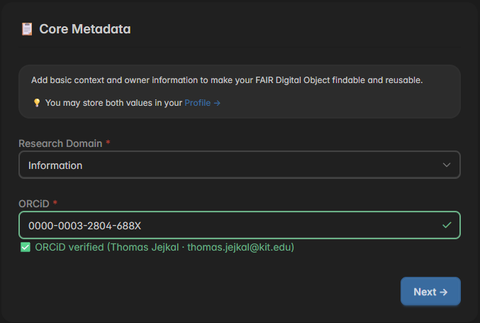
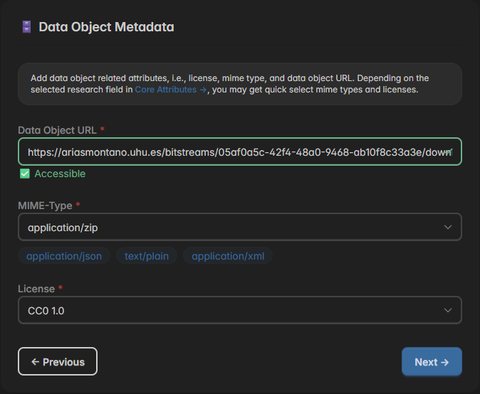
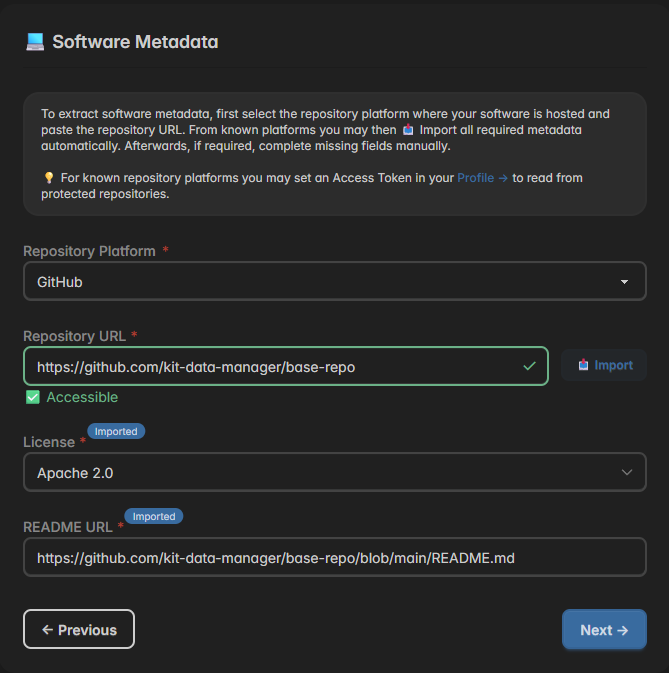
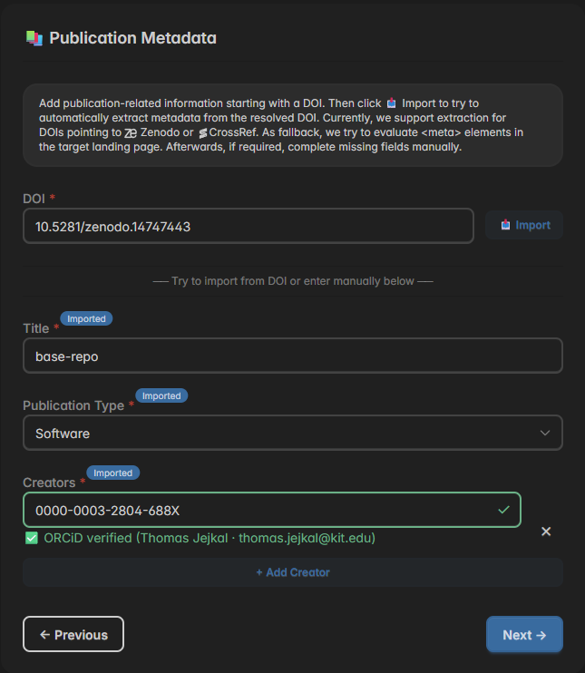
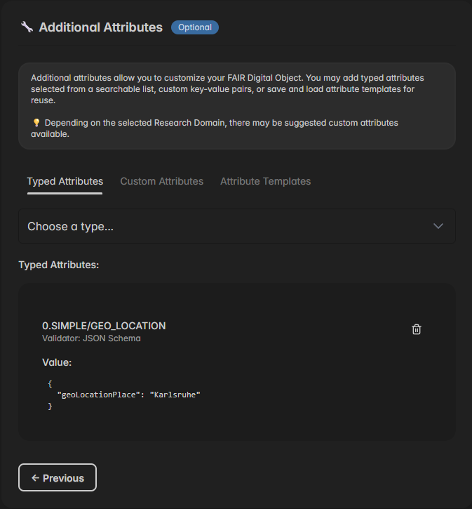
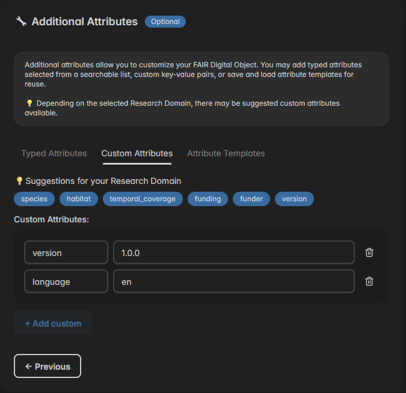

FDO MoMenT organizes FDO attributes into six modules. Each module contains specific fields that contribute to the overall FAIRness of the created FDO. Depending on the selected template, some modules may or may not be available.
📋 Core Metadata

There are two attributes in core metadata: Research Domain and ORCID. Both attributes are supposed to give context about the FAIR Digital Object, and it's creator. The research domain can be selected from a dropdown, which contains all research fields of the Helmholtz Association, for now. In the ORCID field, you have to paste your ORCiD (without base URL), which will then be resolved and validated automatically. As these two attributes rarely change, you may pre-configure them in your → Profile Settings
🗄 Data Object Metadata

For data objects, FDO MoMenT provides the attributes Data Object URL, MIME-Type, and License. The URL will be checked for accessibility after pasting it. The other two attributes must be manually selected, for now. Depending on the research domain selected in the Core Metadata, domain-specific values may be suggested below the attribute inputs (see MIME-Types in screenshot). In the license selection component you will also find some information on which license to use in case there is no license assigned to the data referred by Data Object URL, yet.
💻 Software Metadata

For software, there are four attributes: Repository Platform, Repository URL, License, and README URL. First, select the Repository Platform where your software is located. Currently, four platforms are supported. If your platform is not in the list, you may select "Other", but you will lose the possibility to auto-detect other attributes. Then, add the Repository URL where your software is located. After clicking "Import", FDO MoMenT will try to obtain information about License and README URL. If this fails or if you selected "Other" before, you have to provide these information manually.
📚 Publication Metadata

Attributes in the publication module can typically be obtained via DOI. Therefor, add your publication's DOI in the DOI input field and click "Import". You may either only add the DOI or the full DOI URL. On import, FDO MoMenT will check Zenodo, Crossref, and as fallback <Meta> tags in the referred landing page to obtain the remaining required attributes. If this fails, you have to provide them manually.
🔧 Additional Metadata
The Additional Metadata module is the only module in FDO MoMenT that is fully optional, even if it is enabled. It allows you to add custom
key-value-pairs to a FDO's PID record to add metadata that is not covered by other modules or to serve specific use cases or requirements.
There are two kinds of additional attributes: Typed Attributes and Custom Attributes, which are both explained in the following.
Typed Attributes

Typed Attributes
Custom Attributes

....